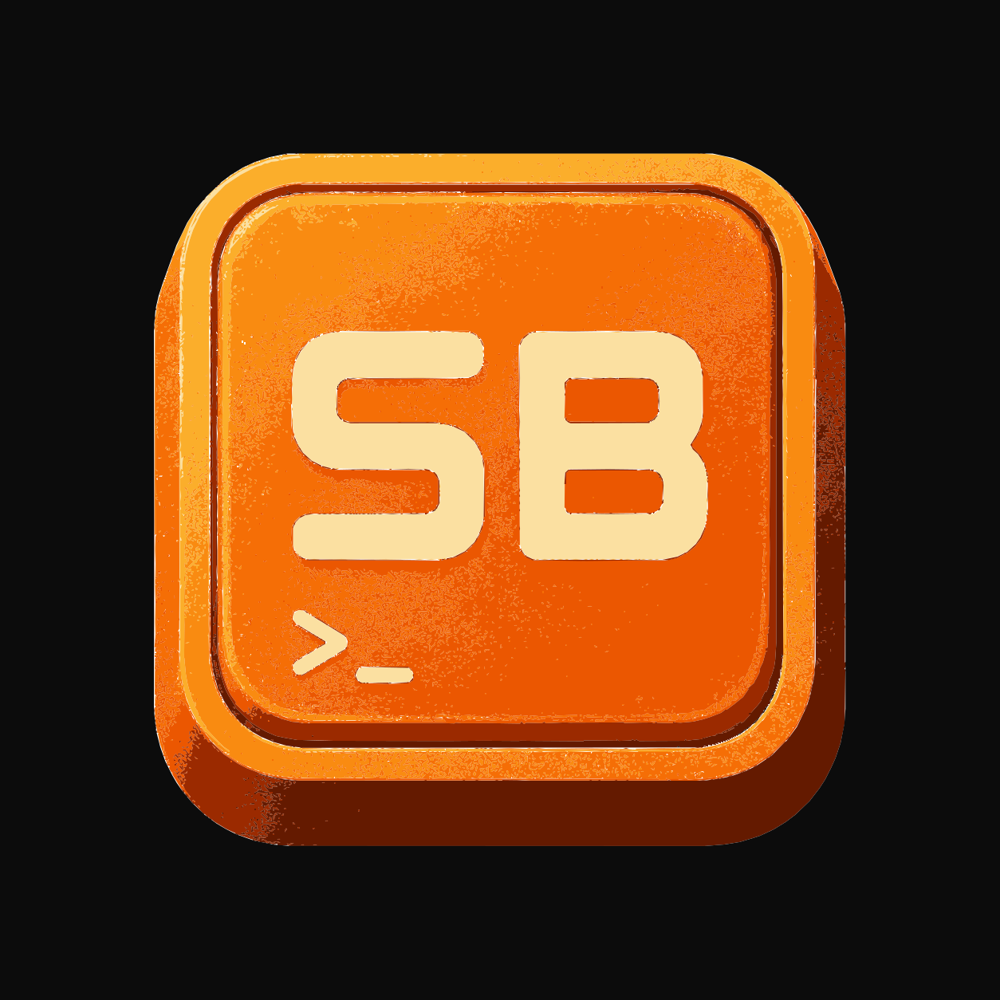

ShellBar centralizes your most frequently used commands into a dedicated action bar within the shell, turning them into instant, one-click shortcuts. Built on libghostty-vt for Linux.
ShellBar is a tool designed to streamline how developers interact with their projects, especially in complex environments such as monorepos.
In modern development workflows, terminal commands are often long, repetitive, and hard to remember. They are typically scattered across package.json files or internal documentation, forcing developers to spend valuable time searching for how to run common tasks.
ShellBar solves this by centralizing your most frequently used commands into a dedicated action bar within the shell, turning them into instant, one-click shortcuts.
This becomes especially powerful in monorepos or multi-environment projects (local, staging, production), as well as setups that vary by platform (web, desktop, mobile). Instead of repeatedly consulting documentation or navigating through scripts, developers can immediately trigger the right workflow.
The result is a more focused, efficient, and productive environment where operational friction is reduced, allowing developers to concentrate on what truly matters: building software.
Visually it's a Ghostty-like terminal for Linux (GTK4 + libadwaita, dark theme, inline tabs). The difference is the button bar that you configure to run any command on the active terminal.
Launch any command with a single click. Define buttons in ~/.config/shellbar/config with name, command, and icon.
Full VT100-520 emulation, 256 colors, true color, and Kitty graphics protocol — powered by libghostty-vt.
Each tab runs its own shell with independent PTY. Dynamic titles via OSC 0/2. Ctrl+T to create new tabs.
Copy-on-select, double-click word, triple-click line. URL hover underline with Ctrl+Click. Middle-click paste. Smooth auto-scroll.
Edit your config and send SIGHUP to reload buttons and keybinds instantly — no restart needed.
Auto-detects installed TUI tools (btop, htop, lazygit, vim, tmux…) and launches them in the active terminal.
Ctrl+F opens an inline search bar with real-time matching through scrollback. Navigate results with arrows, matches highlighted in green with fade-out on click.
Ctrl+= and Ctrl+- to resize the terminal font on the fly. A zoom percentage chip appears at the bottom with a smooth fade animation.
Toolbar buttons flash with a brief highlight on click, giving immediate visual confirmation before the command runs.
Utility bar toggle uses an embedded tools icon that glows green when active — no dependency on system icon themes.
Ctrl+P opens a searchable command palette combining shell history and PATH executables. Results ranked by usage frequency.
Inline ghost-text suggestions as you type — powered by your shell history first, then falling back to PATH executables. Accept with Right arrow.
Place the button bar on any side: top, bottom, left, or right. Hot-reloadable via SIGHUP and configurable in Preferences → Settings.
When the window is resized, terminal dimensions (cols × rows) appear in a smooth fade-in chip overlay — same design as the zoom indicator.
New tabs slide in with a smooth 200ms animation. Tab pills are styled as true tabs with straight top corners and curved bottom.
ShellBar uses libghostty-vt as a
library via CMake FetchContent —
no patches, no upstream modifications, no merge conflicts.
This keeps the project independent, lightweight, and easy to maintain
while benefiting from Ghostty's industry-leading VT engine.
Homebrew — Linux
brew tap rendergraf/shellbar brew install shellbar
Flatpak — any Linux distro
flatpak install flathub com.rendergraf.shellbar
Fedora / RHEL — pre-built .rpm
curl -LO https://github.com/rendergraf/shellbar/releases/latest/download/shellbar-1.9.0-1.x86_64.rpm sudo rpm -i shellbar-1.9.0-1.x86_64.rpm
Debian / Ubuntu — pre-built .deb
curl -LO https://github.com/rendergraf/shellbar/releases/latest/download/shellbar_1.9.0_amd64.deb sudo dpkg -i shellbar_1.9.0_amd64.deb sudo apt-get install -f
Arch Linux — AUR (recommended)
yay -S shellbar
Arch Linux — pre-built package
curl -LO https://github.com/rendergraf/shellbar/releases/latest/download/shellbar-1.9.0-1-x86_64.pkg.tar.zst sudo pacman -U shellbar-1.9.0-1-x86_64.pkg.tar.zst
Build from source
git clone https://github.com/rendergraf/shellbar cd shellbar cmake -B build -G Ninja cmake --build build ./build/shellbar
ShellBar uses a key = value format
compatible with Ghostty. Create ~/.config/shellbar/config to
define your buttons and keybinds.